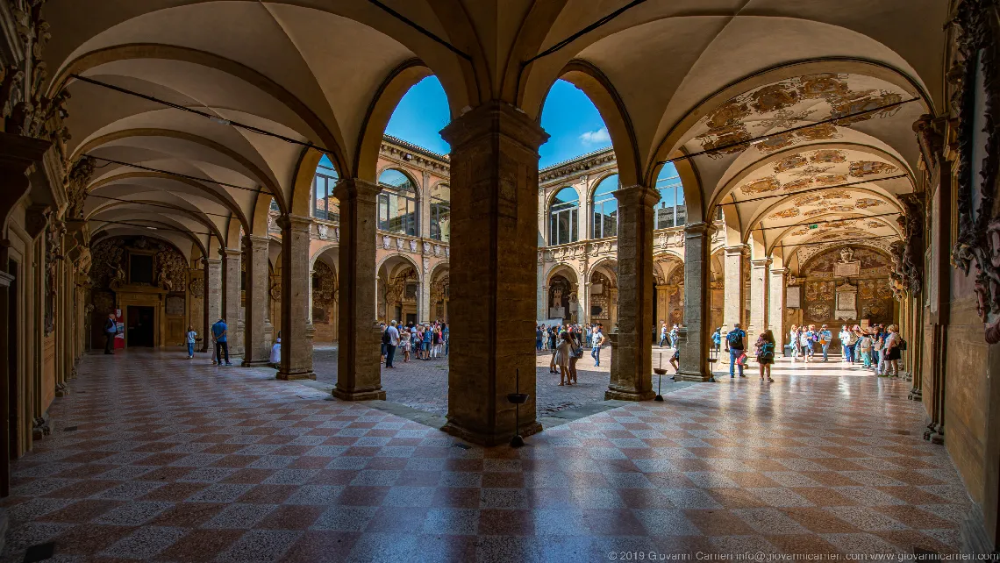
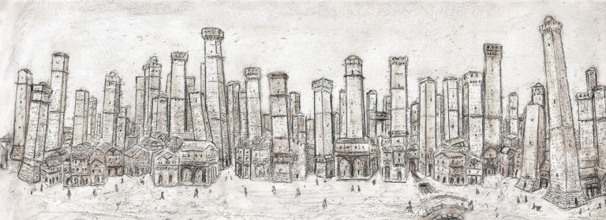
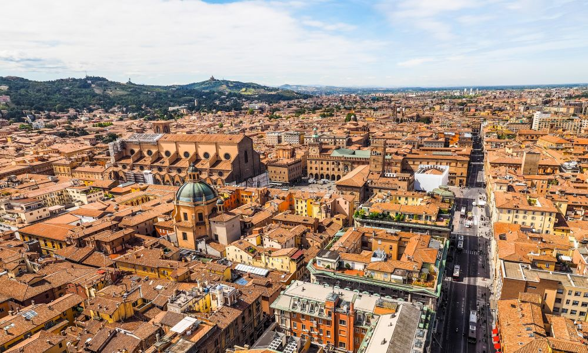

1088: L'Alma Mater Studiorum
- Prima università occidentale
- 6.000 stemmi studenteschi storici
Medioevo: La Città delle 100 Torri
- Portici patrimonio UNESCO
- Canali sotterranei visitabili
Identità Culturale
- La Dotta: tradizione universitaria
- La Rossa: tetti in cotto e storia
- La Grassa: cucina tradizionale